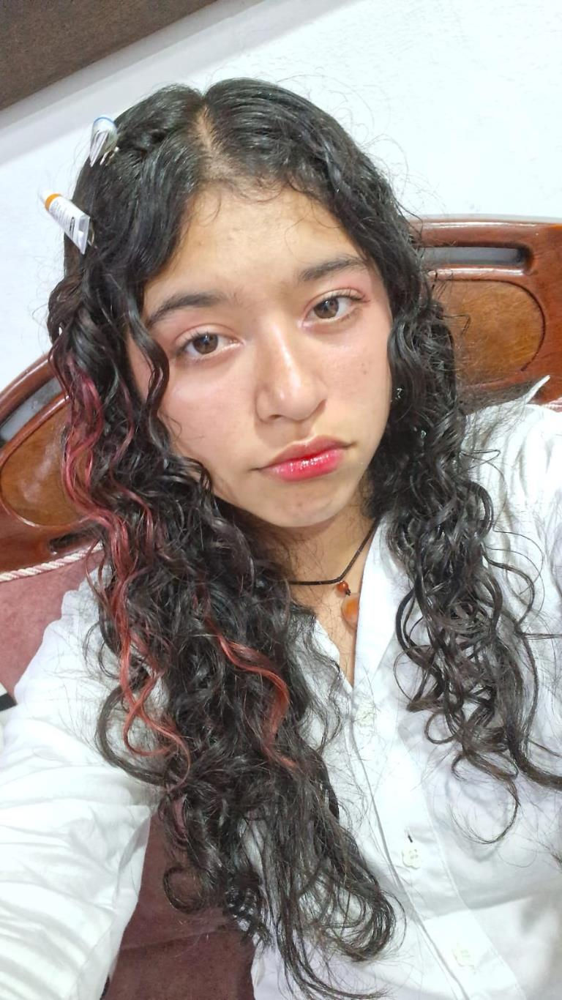
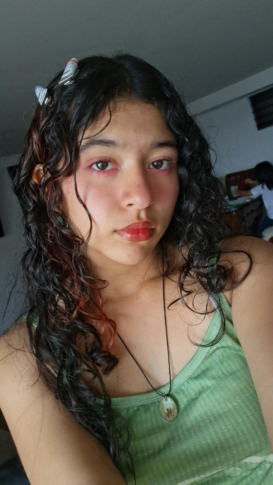

¡Un poco sobre mí!
Mi presentación personal
Tengo 16 años y tengo muchas aspiraciones para mi futuro, con metas a corto mediano y largo plazo.
Soy alergica a la carne de cerdo
mi rincón personal

¡hola, qué gusto verte!
Soy sofia, y me gusta mucho descubrir cosas nuevas
Soy muy juiciosa, pero me distraigo muy rapido
un espacio para presentarme
Soy una persona muy alegre, atenta y curiosa
Mi presentación personal
Tengo 16 años y tengo muchas aspiraciones para mi futuro, con metas a corto mediano y largo plazo.

Aun estoy terminando el colegio, pero quiero estudiar Biologia
Me encanta el conocimiento y daber cosas nuevas, suele cambiar mucho de interes y hoobies
cosas que me inspiran
Me encanta la naturaleza y los animales, descubrir y ver especies es muy emocionante
Me gustan los libros y la lectura, especialmente la literatura clasica
Me interesan la investigación científica y el nuevo conocimiento
temas para explorar
Biología
Química
Física
pasito a pasito hacia el futuro
Mis ideas, mis metas y todo lo que quiero lograr.
Quiero estudiar biologia
Maestra o educadora
Universidad del valle
Quiero tener una mejor atención a las cosas
Mi meta hasta ahora es estudiar y convertirme en una profesional, quiero trabajar en el ambito de la investigacion cientifica de la naturaleza o ser profesora
¡sigamos en contacto!
¡No dudes en escribirme!